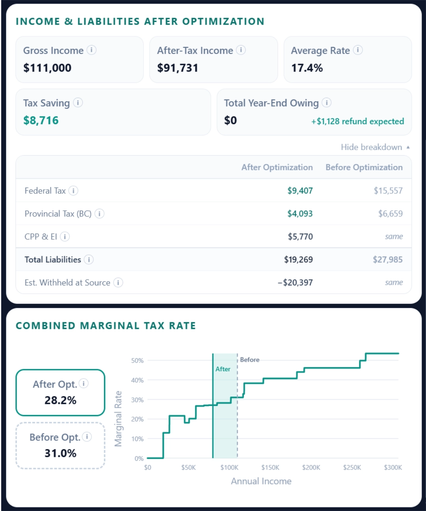

BracketWise
Designing & Architecting a Tax-Optimization Engine

Overview
BracketWise is a financial planning tool built for Canadians with mixed income; such as freelancers who also have T4 employment, investors with capital gains, or anyone navigating more than one income stream.
Unlike tax filing software, which works backward from what already happened, BracketWise is a forward-looking optimization engine. It calculates liability across tax brackets, accounts for dual-income CPP obligations, and models FHSA, RRSP, and TFSA contributions against available cash flow. By transitioning from historical summaries to predictive modeling, the platform enables precise financial decision-making before the tax year concludes.
-
 Impact
Impact
- Lowers the barrier to sophisticated tax planning by translating complex CRA regulatory logic into an intuitive, budget-aware tool, allowing users to make data-backed financial decisions with confidence.
- Provides instant optimization paths for mixed-income earners, by automating complex multi-stream tax calculations,
- Resolvs the self-referential nature of tax-sheltered contributions, capturing tax-saving opportunities that standard calculators consistently miss.
-
 Hats Worn
Hats Worn
- Product Management: Problem framing, scope sequencing, MVP prioritization, feature tradeoff decisions
- UX Research: Domain research, pain point mapping, competitive analysis, algorithmic verification against CRA rules
- System Architecture: Tax engine design, 5-pass optimization logic, data flow, React implementation
- UI/UX Design: Design system tokens, information architecture, data visualization, copywriting
-
 Tools
Tools
Claude + Gemini for research and cross-validation, Figma for UX design, ChatGPT for brand identity, Claude Code + GitHub Copilot for implementation
-
 Timeline
Timeline
Less than 2 weeks, from Ideation to Implementation
-
 Team
Team
Solo Work
-
 Platform
Platform
Responsive Web App, SaaS
How AI Powered This Build
Instead of using AI as a shortcut, I built a system centered on cross-model validation and primary-source grounding. This allowed me to compress research and development cycles without sacrificing the precision required for financial software.
- Logic Verification: I ran tax rules through Claude and Gemini at the same time. If they gave me different answers, I knew something was wrong. I treated those disagreements as a signal to stop and check the official CRA documents myself. This "dual-check" was non-negotiable for a financial tool.
- Brand & Visuals: I used ChatGPT to brainstorm the brand identity, logo directions, and color palettes.
- System Architecture: I used Claude Code to build the calculation engine and GitHub Copilot to help refine the UI components. I treated the AI like a pair-programmer: it drafted the architecture and code, but I remained the one auditing the logic and performance.
This approach allowed me to build a production-grade application in two weeks without sacrificing quality. My role was to manage the AI, verify its outputs, and make the final decisions. It’s a workflow I intend to bring into future product roles: using AI to compress cycles while keeping the human in control of the rigor.
The Problem Landscape
The Core Tension: Reporting vs. Planning
Most Canadians manage their taxes through a "historical" lens. They wait for tax slips to arrive, plug them into software, and see what the result is. This is retrospective reporting.
BracketWise flips this. It assumes the tax year is an active, strategic timeline. The core tension is that current financial tools are designed to report on the past, but the user's primary need is to optimize the future. By the time a user sees their tax liability on a filing platform, the window to leverage tax-advantaged accounts (FHSA/RRSP/TFSA) has already closed.
Defining the Technical Complexity
The challenge of building BracketWise was not UI—it was logic convergence. To build a tool that actually works, I had to architect a system that accounts for the recursive nature of Canadian tax law. For instance, contributing to an RRSP lowers your taxable income, which changes your marginal bracket, which changes how much tax you owe, which changes your cash flow, which changes how much you can contribute.

I solved this by building a 5-pass cyclical optimization loop. Instead of a simple "if/else" statement, the engine iterates through these variables until the result stabilizes. This is the difference between a "calculator" and an "optimization engine."
The "Mixed-Income" Blind Spot
The market is increasingly populated by earners who do not fit the "standard T4" mold. This user group faces three specific systemic hurdles that current software ignores:
- The Dual-CPP Trap: Freelancers earning mixed income are often penalized by CPP obligations on both employment and self-employment income, often triggering an unexpected tax bill in April.
- The Cash-Flow Constraint: Optimization is usually taught in a vacuum (e.g., "Max out your RRSP!"). But for a user with limited monthly cash, "maxing out" is often physically impossible. The real problem isn't "what is the maximum contribution," but "what is the optimal contribution I can afford right now?"
- The Contribution Sequence: There is no standard advice on the order of operations between FHSA, RRSP, and TFSA. Without an engine, users often default to the wrong account, missing out on lifetime savings.
Moving from retrospective reporting to predictive modeling by architecting a recursive optimization engine
Logic Validation & Data Integrity
Building an accurate tax engine required more than a functional UI; it demanded algorithmic reliability. To ensure the calculation engine produced precise outputs, I engineered a strict validation framework using dual-model parallel cross-checking against official CRA regulations.
- Convert CRA rules to variables
- Map fiscal year brackets
- Codify deductions and credits
- Establish rule dependencies
- Trace full 5-pass recursive loop
- Validate calculation steps
- Audit all state transitions
- Verify convergence stability
- Cross check: Claude vs. Gemini
- CRA docs as final arbiter
- Run complex test cases
- Halt on any logic discrepancy
- Edge case analysis
Architecture Diagram
I developed a comprehensive system map detailing how data moves through the platform. The architecture separates standard mandatory contributions (tax, EI and dual-tier CPP) from the core Optimization Engine, which runs a -pass recursive loop to balance RRSP headroom against available cash and FHSA limits.

UX Strategy
Contextual Onboarding & Trust
The Problem:
At the start of a financial tool, users face two major hurdles: they don't understand why they need to provide complex data (like CRA limits), and they hesitate to enter real numbers due to privacy fears. Standard pop-ups often skip the necessary context or overwhelm users with massive legal disclaimers, leading to drop-offs and bad data inputs.
The Solution:
I designed a 4-step onboarding overlay that tackles both education and privacy simultaneously. It explicitly explains the value of the required data and features a "Privacy & Security" badge, leveraging the app's browser-based setup to guarantee data never leaves the device. To keep the main workspace clean and welcoming, I moved the heavy legal compliance text into this overlay and placed only a short disclaimer in the footer. Finally, a permanent "How it works" button in the header ensures this context is always accessible on demand.
 Onboarding, Privacy & Disclaimer
Onboarding, Privacy & Disclaimer
Zero-State & Visual Affordance
The Problem:
When users first open a financial calculator, a blank results panel feels intimidating and gives zero context about what the application actually outputs.
The Solution:
Instead of leaving the right-hand dashboard empty on load, I designed a structured Skeleton UI. By displaying muted outlines of the final Cash Cascade cards and charts, the interface immediately previews what the output will look like. This provides clear visual affordance, helping users understand the cause-and-effect relationship between their inputs on the left and the optimized results on the right.
 Zero-State
Zero-State
Visualizing the Cash Cascade
The Problem:
Showing users a massive wall of tax numbers is confusing. There is a real risk they might lock their cash into long-term investments and not have enough left to actually pay their tax bill in April.
The Solution:
I designed the results section as a step-by-step "Cash Cascade" using progressive disclosure. The layout acts as a financial guardrail: it forces users to address their mandatory tax owings (Step 1) before unlocking their investment options for FHSA and RRSP (Steps 2 and 3). By breaking down massive annual limits into clear monthly targets, the design turns abstract math into a safe, easy-to-follow financial roadmap.
 Cash Cascade
Cash Cascade
Dynamic Alerts & Contextual Education
The Problem:
Tax terminology is intimidating, and users can easily miss critical legal thresholds or input invalid data during entry, leading to compliance errors and a lack of trust in the tool.
The Solution:
I separated user education from system feedback. I implemented static, on-demand tooltips to explain complex rules (like capital gains inclusion rates) without cluttering the UI. Alongside this, I designed dynamic micro-copy and active input constraints. If a user triggers a legal threshold (like a freelancer crossing $30,000 for GST registration) a specific warning appears. Also, if a user inputs a value exceeding a hard legal limit (such as FHSA limit), the system automatically clears the input and displays an inline alert directly below the field explaining the restriction. This prevents invalid data entry while proactively keeping the user informed and compliant.
 Conditional Micro-Copy & Contextual Tooltips
Conditional Micro-Copy & Contextual Tooltips
Data Visualization & Progressive Disclosure
The Problem:
Displaying comprehensive tax data is a balancing act. Dumping a massive spreadsheet of calculations onto the screen causes cognitive overload for the average user, but hiding the math entirely frustrates power users who need to verify where their money is going.
The Solution:
I structured the results dashboard using progressive disclosure to serve both user types. The default view surfaces only high-impact takeaways—like total tax savings and the visual "Income Shielded Zone" chart—for immediate positive reinforcement. For power users requiring deeper transparency, a "See breakdown" toggle reveals a granular, line-by-line comparison of federal tax, provincial tax, and CPP/EI before and after optimization. This keeps the primary interface clean and approachable without sacrificing mathematical transparency.

Data VisualizationTime-Aware Cash Flow Planning
The Problem:
In my initial iterations, the system simply divided the user's annual tax liability by 12 to calculate their monthly savings goal. I quickly realized a critical flaw: this assumed everyone starts planning on January 1st. If a user inputs their data in July, dividing by 12 creates a false sense of security and guarantees a massive cash shortfall by tax season.
The Solution:
I updated the logic to make the tool time-aware. The system now dynamically takes the total tax owed and available cash and divides it strictly by the remaining months in the year. This iteration ensures that the recommended monthly targets adjust based on the current calendar date, keeping the financial plan realistic and safe no matter when the user starts.
 Time-Aware Cash Flow Planning
Time-Aware Cash Flow Planning
Accessible Design
The Problem:
During early iterations, instant reactivity caused "calculation panic"; numbers flashing on every keystroke made the tool feel unstable. Additionally, the dense financial inputs created visual clutter, and removing a traditional "Calculate" button broke the standard accessibility flow for screen readers and keyboard users.
The Solution:
I cleaned up the interface by removing redundant placeholder numbers. To build trust and prevent calculation panic, I designed the engine to wait for explicit intent—updating the math only when the user clicks away from an input or presses 'Enter'. For accessibility, I managed keyboard focus to guide users automatically into newly revealed fields, and ensured screen readers quietly announce the updated tax results without page reloads. This approach makes the complex tool feel deliberate and inclusive.
Product Scope & Trade-Offs
Actionable Optimization vs. One-Click Simplicity
The Trade-Off:
Standard online tax calculators (like WealthSimple's) prioritize extreme simplicity, usually asking for just a few aggregate numbers to spit out a rough tax estimate. While this is frictionless, it's after the fact andoffers zero strategic value for someone trying to actively lower their tax bill or plan their cash flow.
The Decision:
I deliberately sacrificed bare-bones simplicity in favor of advanced optimization. By requiring more granular, varied inputs—like specific contribution limits, detailed income streams, and targeted expenses—BracketWise shifts from being a simple estimating calculator to a comprehensive planning tool. The trade-off of a longer data entry process is justified by the output: a highly actionable, personalized roadmap for wealth building.
Self-Employment Scope: Planning vs. Bookkeeping
The Trade-Off:
Self-employed users face massive complexities, from itemizing granular deductions (like home office or vehicle expenses) to tracking legal requirements like GST/HST registration thresholds. Building modules for receipt tracking or sales tax calculation would have caused severe scope creep, turning the app into a bookkeeping utility like QuickBooks.
The Decision:
I constrained the self-employment scope to focus purely on income tax planning. I restricted the inputs to just Gross Revenue and a single, aggregated "Deductible Business Expenses" field, forcing the user to calculate their itemized deductions elsewhere. However, to ensure users remain compliant, I leveraged the dynamic alert system: if their Gross Revenue exceeds the $30,000 threshold, the UI triggers a conditional alert advising them to register for GST/HST. This balanced keeping the product lean while protecting the user.
Household Complexity vs. MVP Simplicity
The Trade-Off:
Canadian taxes often involve complex household dynamics, such as optimizing who claims specific expenses to maximize returns. Building a full multi-user family profile would have drastically expanded the scope, delayed the launch, and cluttered the interface.
The Decision:
I chose to optimize the core product for the individual earner while still accommodating common family deductions. I included input fields for Medical and Child Care expenses, but rather than building complex logic to route those claims, I used on-demand tooltips to educate users on who in the household must or should claim them. This delivered the necessary utility while protecting the timeline and simplicity.
Validation & Usability Testing
Check Out the ApplicationReflections
See More of My Work

Enterprise Service Design

Analytics Web-App Design

Mobile App Design

Ecommerce Design/Dev

UX/UI Case Study

UX Case Study